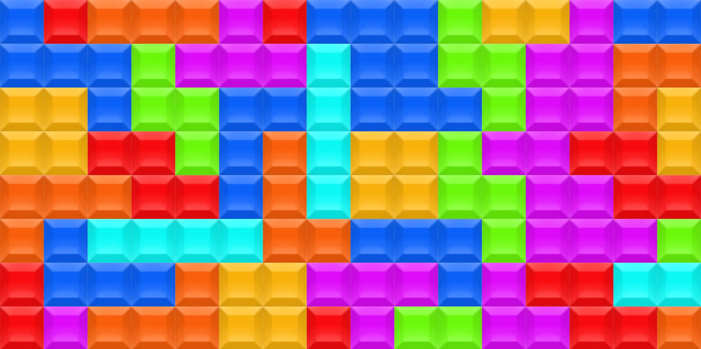

學校信箱：u11010012@go.utaipei.edu.tw
當前時間：
數位電路實驗期末專題

方法探討
1. 顯示規則
- 藉由實驗平台上的LCD來顯示規則
- 輸入：switch 1
- 輸出：LCD顯示
- 實作內容：藉由LCD顯示俄羅斯方塊遊戲規則，若是顯示位置不夠則切換顯示。剛開機時顯示按switch 1顯示規則，按下後序向的顯示規則。
2. 顯示分數：
- 藉由實驗平台中的7段顯示器來顯示分數，需要連結主遊戲(8x8)的輸出來判斷分數
- 當一次消去1列，得200分
- 一次消去2列，得400分
- 一次消去3列，得800分
- 一次消去4列，得1600分
- 不同的方塊能清除的列數不同。I型方塊最多能清除4列，J、L型方塊最多能清除3列，而剩餘的則最多只能清除2列。
最多只能消除4排，因為只有I型方塊能達成。
將得到的分數累積並顯示在7段顯示器上，以達到算分的目的
- 輸入：
enable輸入，用來判斷消除的瞬間(0->1瞬間)
消除的列數，型態為int(0~4)
是否連續，型態為std_logic
- 輸出：
6個大小為7的陣列，記錄對應的6個7段顯示器的值
上限為一百萬(0~999999)
一個int型態，記錄目前累計分數（給6.）
- 實作內容：當enable的瞬間要根據另外的輸入來決定加上多少分
3. 音效
- 輸入：消除訊號、遊戲結束訊號
- 輸出：蜂鳴器接腳
- 實作內容：播放背景音樂、遊戲結束音效、消除列的音效（可能不會有）
- 做法：聲音高低的產生是根據頻率決定，將各音色之頻率先定義，需要該音色時產生該頻率的波形，當需要撥放時組合音色配合休拍產生旋律。
4. 顯示下一個形狀
- 輸入：一個int（0~6）對應到7種形狀
- 輸出：純組合邏輯，將對應的輸入顯示至骰子燈
- 實作內容：輸入對應的形狀於8x8點矩陣上
5. 用燈顯示消除的列數：
- 輸入：enable消除瞬間訊號，消除的列數
- 輸出：LED 1~12
- 實作內容: 將LED由左至右分為四組: L1~L3、L4~L6、L7~L9、L10~L12、每消除一列亮一組(三顆)燈
- 亮燈方法:假設同時消除三列，則依序是第一組燈先亮，其次第二組燈亮、第三組燈亮，最後此三組燈同時閃爍三次。維持數秒後再全部熄滅。
6. 分數累積：
- 藉由左邊的橘色燈記錄累積分數
- 輸入：來自分數顯示的累積分數int
- 輸出：左邊的一排橘色燈所對應的一個大小為8陣列
- 實作內容：使用組合邏輯判斷幾分以上亮幾個燈(比如每100亮一個)
7. 軟體x硬體轉換
- 由於7段顯示器、左側橘燈、以及鍵盤有共用相同腳位，故需要使用序向邏輯的方式快速交換這些訊號，始之肉眼上看起來像靜止畫面。
- 輸入：來自7段中6個大小為7的陣列、來自左邊橘燈中一個大小為為8的陣列、鍵盤按下的3個按鈕（1、2、3）
- 輸出：燈的開關、共用腳位DE3，DE2，DE1、非共用腳位。
8. 主要遊戲內容：
- 輸入：遊戲啟動鍵、左右移動鍵、正逆時鐘旋轉鍵、下移鍵、clock、隨機數產生的結果
- 輸出：64大小陣列代表紅色8x8、64大小列代表綠色8x8、顯示下一形狀訊號、消除列時瞬間信號、消除的列數、是否為連續消除訊號
- 實作內容：自動下落形狀、左右移動操作、正逆時針旋轉操作、消除填滿之列。
-
做法：啟動鈕沒按時清空陣列，啟動時根據隨機數字的結果產生4個點(一個形狀)的x,y座標，當counter計數到某一值時將y軸座標加1(往下一格)，當碰到其他或是以到達邊界時則不移動並停止，開始下落下一個形狀。左右移動類似此原理，不過是控制x軸的加減1。正逆時鐘的旋轉是將該形狀先移動到原點，將該形狀的x,y座標乘上旋轉矩陣，再將其移回原處。消除判斷是從最上層開始檢查，當一整排都亮時，將此排上的每一排都下移一格，並清空第一排，檢查至最下層。
9. 除頻器
- 輸入：clock、輸入pulse
- 輸出：調頻後的波形
- 實作內容：將數個波整合為1個波。
10. 點陣顯示版軟體x硬體轉換
- 輸入：64大小陣列代表紅色8x8、64大小列代表綠色8x8、 clock
- 輸出：24個點陣圖需要的pin腳
- 實作內容：用序向邏輯的方式快速切換顯示的列，使之看起來像靜止。
- 做法：每次顯示一列，該列顯示的行則根據輸入決定，藉由輸入的clock快速交換顯示列。
11. 隨機數產生器
- 輸入：clock、產生隨機數訊號
- 輸出：前一個隨機值、目前隨機值
- 實作內容：當clock時counter加1，當要求產生隨機數時利用公式(包含counter)求隨機值，並保留前一個隨機結果。
12. Clock generator
- 輸入：硬體震盪器接腳
- 輸出：調整周期至1 ms
- 實作內容：利用內部自定義計數器調整clock週期